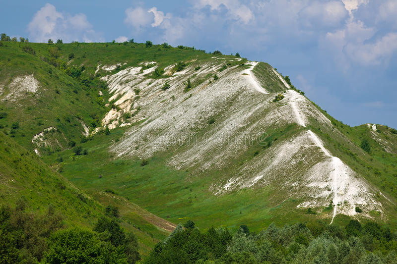
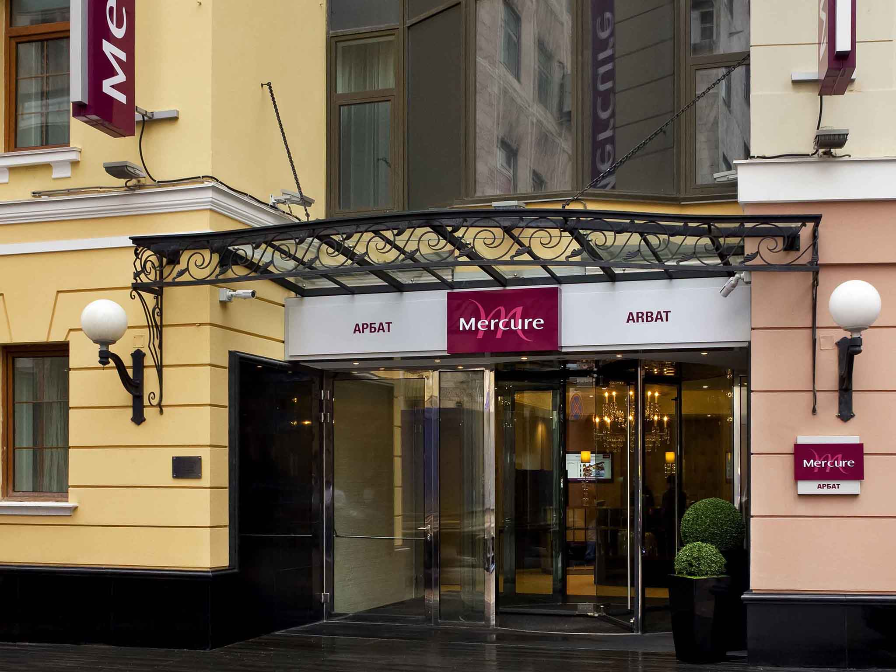

Het grootste gedeelte van Rusland heeft een landklimaat met koude winters en warme zomers. De winter loopt ongeveer van november tot april en de zomer van juni tot september. Temperaturen liggen in de zomer rond de 23 graden terwijl het in de winter gemiddeld -5 graden is.
De vegetatie van Rusland bestaat uit toendra-, tajga-, loofbos-, steppe- en woestijngebieden.
Een hotel in Rusland is Hotel Mercure Arbat Moscow.Een nacht in Hotel Mercure Arbat Moscow kost US$ 103
